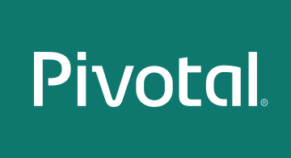
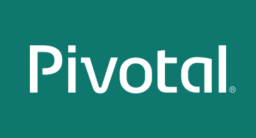

| Date |
Topic |
Description |
Presenter |
| 09/27/2016 |
Ask Me Anything (AMA) Reactive Programming |
The reactive programming model involves a fundamental shift
from imperative to non-blocking logic and understanding what that
means on the most basic level is an essential and required first
step. Prerequisites: Rossen's talk from SpringOne found here
|
Rossen Stoyanchev |
| 9/30/2016 |
Pivotal Cloud Foundry and Apigee |
A demo of PCF with Apigee Edge to provide route services.
The route service intelligently routes API traffic to and from
Edge, thereby leveraging Apigee's broad range of features related
to traffic management, mediation, policy enforcement, and
analytics. |
Kartik Lunkad |
| 10/5/2016 |
Under the Hood with Containers and Cloud Foundry |
A deep dive exploring containers, their use cases and
implementation, and how Cloud Foundry uses them; compare to k8s and
other platforms |
John Feminella |
| 10/11/2016 |
Spring Batch, Spring Cloud Data Flow |
AMA session with Marius Bogoevici |
Marius Bogoevici |
| 10/14/2016 |
Introduction to Spring Boot |
An overview of Spring Boot followed by a live-coding demo |
Utkarsh Nadkarni |
| 10/18/2016 |
Spring Cloud and the Config Server |
An overview of Spring Cloud and a look at the Config Server
with a live-coding demo |
Utkarsh Nadkarni |
| 11/04/2016 |
"Eventually Consistent" Database Design |
A look at designing architectures with eventually
consistent backing stores |
Vinicius Carvalho |
| 11/11/2016 |
Pivotal Cloud Foundry and Jenkins |
Use CI/CD with Jenkins to deploy applications to Pivotal
Cloud Foundry |
Kartik Lunkad |
| 11/18/2016 |
Pivotal Cloud Foundry and Zipkin |
We’ll describe how to do distributed tracing with Spring
Cloud Sleuth and Zipkin. Additionally, we'll show a demo of
incorporating these technologies into an existing application. |
Reshmi Krishna |
| 12/02/2016 |
Spring Cloud and Service Discovery |
An overview of Spring Cloud and a look at the Service Discovery with Netflix's Eureka. This will be followed by a live-coding demo |
Utkarsh Nadkarni |
 
